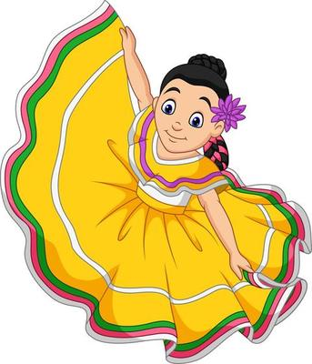
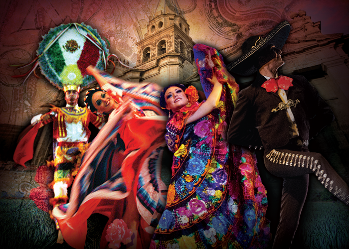

La danza folclórica mexicana, un componente crucial del patrimonio cultural del país, se distingue por su diversidad, historia y significado. Esta forma de expresión artística refleja la riqueza de las tradiciones regionales, la influencia de diversas culturas y la celebración de eventos importantes.
Aspectos clave de la danza folclórica mexicana:
Diversidad regional:
Cada región de México posee sus propias danzas, que reflejan su historia, cultura y tradiciones específicas.
Influencia histórica:
La danza folclórica mexicana tiene raíces en las culturas prehispánicas, la influencia española y la mezcla de elementos indígenas y europeos.
Significado cultural:
Las danzas transmiten mensajes, creencias y valores culturales, a menudo acompañadas de música y vestimenta tradicional.
Importancia social:
La danza folclórica es un vehículo para la celebración de fiestas religiosas, eventos comunitarios y la transmisión de conocimientos culturales a las nuevas generaciones.
Ejemplos de danzas folclóricas mexicanas:
Jarabe Tapatío:
Considerado el baile nacional de México.
Huapango:
Baile originario de la región de Veracruz, conocido por su música vibrante y los movimientos de los bailarines.
Danza de los Voladores de Papantla:
Ceremonia ritual que se realiza en la región de Veracruz, donde los bailarines bajan de una estructura de madera con sogas.
Danza del Venado:
Danza ceremonial de la región de Oaxaca, con movimientos que imitan al venado y un fuerte significado espiritual.
| conoce mas de la danza folclorica a continuacion. | conoce mas de nosotros a continuacion. |
 |
 |